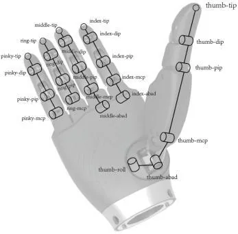
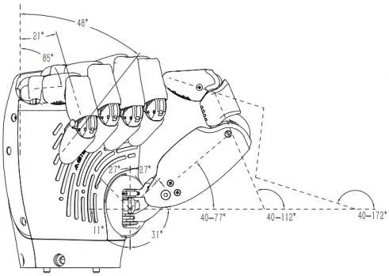

OmniHand Pro 2025 Mano robótica diestra de 19 grados de libertad
Efector final de cinco dedos con 12 articulaciones activas y detección de fuerza tridimensional en las yemas, para tareas de manipulación fina con más carga.
- Grados de libertad19 (12 activos)
- Fuerza de agarre10 kg
- Peso≤ 810 g
- Resolución táctil0,1 N

PVP 12.500 €
Aplicaciones
La hoja técnica de OmniHand Pro 2025 no detalla aplicaciones; las indicadas se basan en la documentación de la familia OmniHand y conviene confirmarlas con el fabricante.
Imágenes
La documentación solo incluye dibujos técnicos, sin fotografías del producto. Conviene sustituir la imagen principal por una fotografía oficial.
¿Qué es el OmniHand Pro 2025?
OmniHand Pro 2025 es una mano robótica de cinco dedos con 19 grados de libertad, 12 de ellos activos, para montar como efector final en robots humanoides y brazos robóticos. Integra sensores táctiles con detección de fuerza tridimensional en las yemas y unidimensional en la palma, y ofrece una fuerza de agarre de 10 kg con cinco dedos.
Más articulaciones activas
12 grados de libertad activos de 19; índice y corazón con abducción de hasta 14° y pulgar con rotación de 42°.
Tacto tridimensional en las yemas
Mide fuerza en tres ejes en la punta de los dedos y en un eje en la palma, con 0,1 N de resolución y rango de 0 a 50 N.
Construcción robusta
Los sensores soportan hasta 1.000 N sin daños y la mano trabaja entre -20 y 50 °C.
Integración sencilla
Alimentación de 12 a 24 V, comunicación CAN-FD y actualizaciones OTA.
Aplicaciones del OmniHand Pro 2025
Escenarios en los que encaja el OmniHand Pro 2025.
- Efector final para robots humanoides
- Manipulación fina con control de fuerza en las yemas
- Investigación en manipulación diestra
- Integración en brazos robóticos y manipuladores móviles
Especificaciones técnicas del OmniHand Pro 2025
General
| Peso | ≤ 810 g |
|---|---|
| Dimensiones | 207 × 98 × 56 mm |
| Grados de libertad | 19 |
| Grados de libertad activos | 12 |
Prestaciones
| Tiempo mínimo de apertura / cierre (típico) | 0,7 s |
|---|---|
| Precisión de repetición en la punta de los dedos (típica) | 0,4 mm |
| Fuerza de agarre con cinco dedos | 10 kg |
Electrónica y entorno
| Tensión de trabajo | 12–24 V |
|---|---|
| Interfaz de comunicación | CAN-FD |
| Temperatura de trabajo | -20 a 50 °C |
| Actualización | OTA (en remoto) |
Sensores táctiles
| Detección de fuerza | tridimensional en las yemas; unidimensional en la palma |
|---|---|
| Resolución | 0,1 N |
| Rango de detección | 0–50 N |
| Fuerza máxima admisible sin daños | 1.000 N |
Rango articular: índice y corazón
| Índice · DIP (flexión/extensión) | 0° a 226° |
|---|---|
| Índice · PIP (flexión/extensión) | 0° a 157° |
| Índice · MCP (flexión/extensión) | 0° a 76° |
| Índice · ABAD (abducción/aducción) | 0° a 14° |
| Corazón · DIP (flexión/extensión) | 0° a 227° |
| Corazón · PIP (flexión/extensión) | 0° a 159° |
| Corazón · MCP (flexión/extensión) | 0° a 77° |
| Corazón · ABAD (abducción/aducción) | 0° a 14° |
Rango articular: anular, meñique y pulgar
| Anular y meñique · DIP (flexión/extensión) | 0° a 228° |
|---|---|
| Anular y meñique · PIP (flexión/extensión) | 0° a 159° |
| Anular y meñique · MCP (flexión/extensión) | 0° a 85° |
| Anular y meñique · ABAD (abducción/aducción) | 0° (sin abducción) |
| Pulgar · DIP (flexión/extensión) | 40° a 172° |
| Pulgar · PIP (flexión/extensión) | 40° a 112° |
| Pulgar · MCP (flexión/extensión) | 40° a 77° |
| Pulgar · ABAD (abducción/aducción) | 0° a 54° |
| Pulgar · ROLL (rotación) | 0° a 42° |
Galería del OmniHand Pro 2025

Esquema cinemático de dedos y pulgar 
Rango de flexión de dedos y pulgar